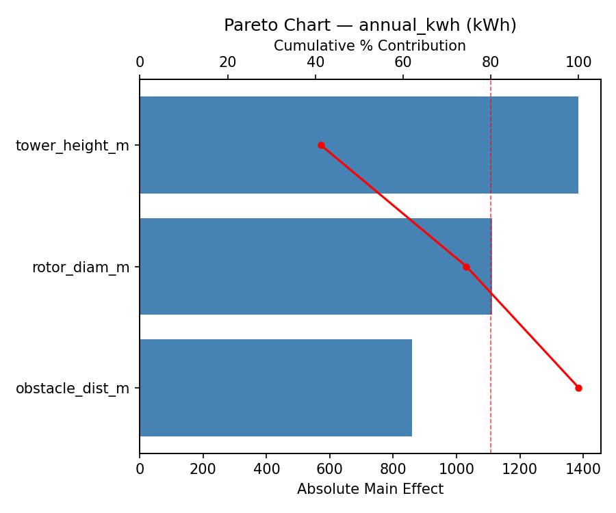
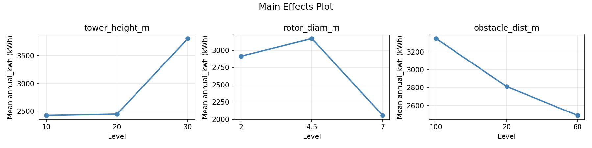
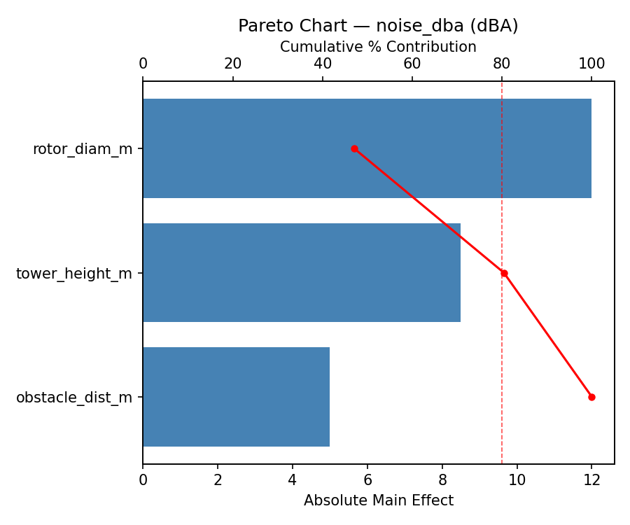
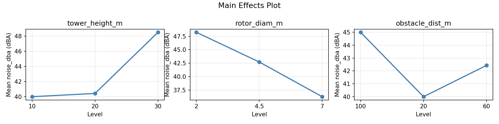
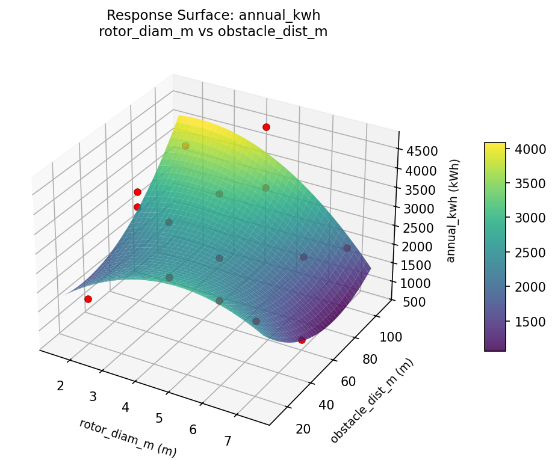
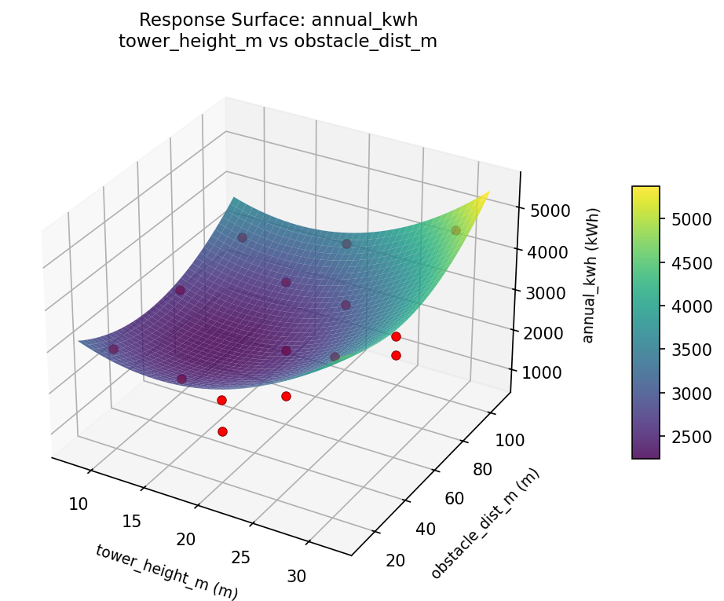
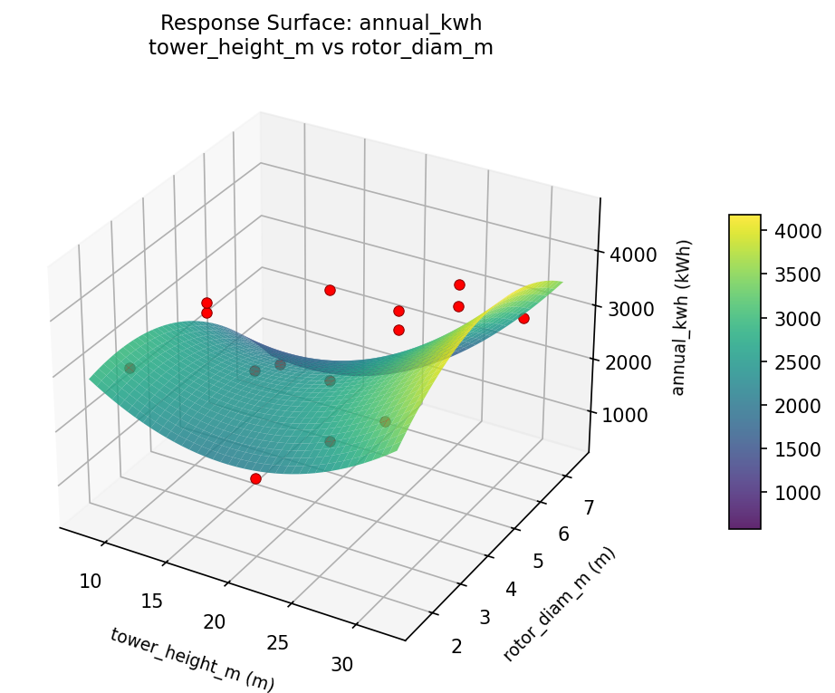
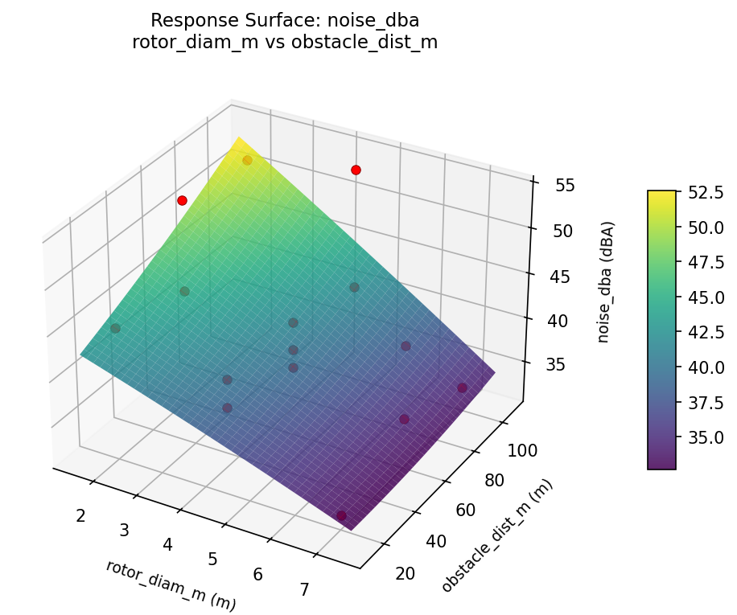
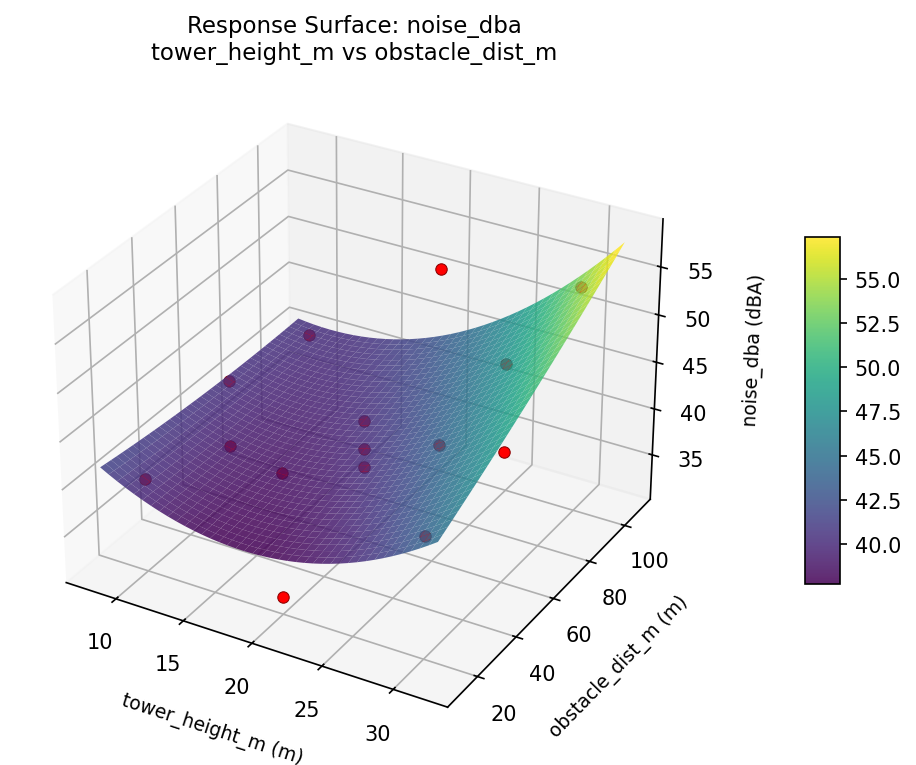
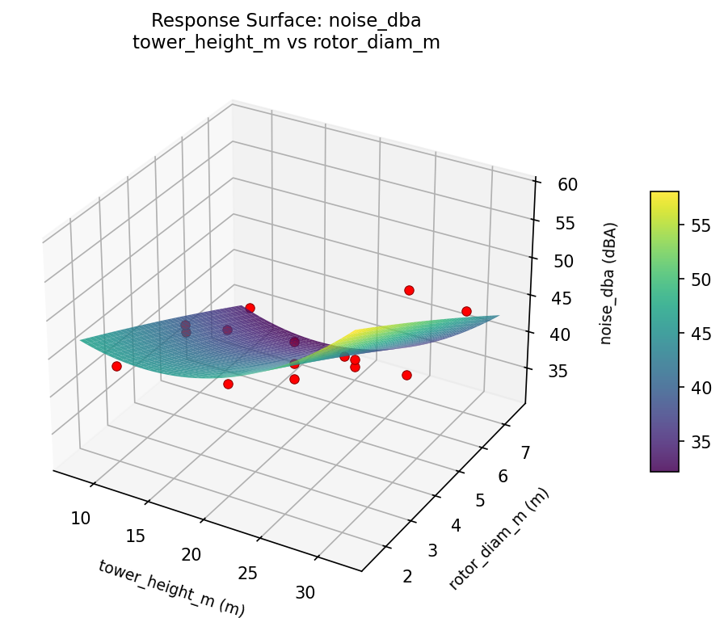

Experimental Setup
Factors
| Factor | Low | High | Unit |
|---|
tower_height_m | 10 | 30 | m |
rotor_diam_m | 2 | 7 | m |
obstacle_dist_m | 20 | 100 | m |
Fixed: avg_wind_speed = 5.5m/s, terrain = suburban
Responses
| Response | Direction | Unit |
|---|
annual_kwh | ↑ maximize | kWh |
noise_dba | ↓ minimize | dBA |
Configuration
{
"metadata": {
"name": "Small Wind Turbine Siting",
"description": "Box-Behnken design to maximize annual energy output and minimize noise by tuning tower height, rotor diameter, and distance from obstacles"
},
"factors": [
{
"name": "tower_height_m",
"levels": [
"10",
"30"
],
"type": "continuous",
"unit": "m"
},
{
"name": "rotor_diam_m",
"levels": [
"2",
"7"
],
"type": "continuous",
"unit": "m"
},
{
"name": "obstacle_dist_m",
"levels": [
"20",
"100"
],
"type": "continuous",
"unit": "m"
}
],
"fixed_factors": {
"avg_wind_speed": "5.5m/s",
"terrain": "suburban"
},
"responses": [
{
"name": "annual_kwh",
"optimize": "maximize",
"unit": "kWh"
},
{
"name": "noise_dba",
"optimize": "minimize",
"unit": "dBA"
}
],
"settings": {
"operation": "box_behnken",
"test_script": "use_cases/130_wind_turbine_siting/sim.sh"
}
}
Experimental Matrix
The Box-Behnken Design produces 15 runs. Each row is one experiment with specific factor settings.
| Run | tower_height_m | rotor_diam_m | obstacle_dist_m |
|---|
| 1 | 20 | 2 | 20 |
| 2 | 20 | 4.5 | 60 |
| 3 | 30 | 4.5 | 100 |
| 4 | 30 | 4.5 | 20 |
| 5 | 20 | 4.5 | 60 |
| 6 | 20 | 4.5 | 60 |
| 7 | 10 | 4.5 | 100 |
| 8 | 30 | 2 | 60 |
| 9 | 20 | 2 | 100 |
| 10 | 30 | 7 | 60 |
| 11 | 10 | 4.5 | 20 |
| 12 | 20 | 7 | 100 |
| 13 | 10 | 2 | 60 |
| 14 | 10 | 7 | 60 |
| 15 | 20 | 7 | 20 |
Step-by-Step Workflow
1
Preview the design
$ python doe.py info --config use_cases/130_wind_turbine_siting/config.json
2
Generate the runner script
$ python doe.py generate --config use_cases/130_wind_turbine_siting/config.json \
--output use_cases/130_wind_turbine_siting/results/run.sh --seed 42
3
Execute the experiments
$ bash use_cases/130_wind_turbine_siting/results/run.sh
4
Analyze results
$ python doe.py analyze --config use_cases/130_wind_turbine_siting/config.json
5
Get optimization recommendations
$ python doe.py optimize --config use_cases/130_wind_turbine_siting/config.json
6
Generate the HTML report
$ python doe.py report --config use_cases/130_wind_turbine_siting/config.json \
--output use_cases/130_wind_turbine_siting/results/report.html
Features Exercised
| Feature | Value |
|---|
| Design type | box_behnken |
| Factor types | continuous (all 3) |
| Arg style | double-dash |
| Responses | 2 (annual_kwh ↑, noise_dba ↓) |
| Total runs | 15 |
Analysis Results
Generated from actual experiment runs using the DOE Helper Tool.
Response: annual_kwh
Top factors: tower_height_m (41.3%), rotor_diam_m (33.1%), obstacle_dist_m (25.6%).
Pareto Chart

Main Effects Plot

Response: noise_dba
Top factors: rotor_diam_m (47.1%), tower_height_m (33.3%), obstacle_dist_m (19.6%).
Pareto Chart

Main Effects Plot

Response Surface Plots
3D surfaces fitted with quadratic RSM. Red dots are observed data points.
annual kwh rotor diam m vs obstacle dist m

annual kwh tower height m vs obstacle dist m

annual kwh tower height m vs rotor diam m

noise dba rotor diam m vs obstacle dist m

noise dba tower height m vs obstacle dist m

noise dba tower height m vs rotor diam m

Full Analysis Output
RSM surface: rsm_annual_kwh_tower_height_m_vs_rotor_diam_m.png
RSM surface: rsm_annual_kwh_tower_height_m_vs_obstacle_dist_m.png
RSM surface: rsm_annual_kwh_rotor_diam_m_vs_obstacle_dist_m.png
RSM surface: rsm_noise_dba_tower_height_m_vs_rotor_diam_m.png
RSM surface: rsm_noise_dba_tower_height_m_vs_obstacle_dist_m.png
RSM surface: rsm_noise_dba_rotor_diam_m_vs_obstacle_dist_m.png
=== Main Effects: annual_kwh ===
Factor Effect Std Error % Contribution
--------------------------------------------------------------
tower_height_m 1385.7500 285.1317 41.3%
rotor_diam_m 1113.2143 285.1317 33.1%
obstacle_dist_m 859.3929 285.1317 25.6%
=== Summary Statistics: annual_kwh ===
tower_height_m:
Level N Mean Std Min Max
------------------------------------------------------------
10 4 2423.5000 1109.7304 763.0000 3062.0000
20 7 2446.5714 1002.0106 1132.0000 3930.0000
30 4 3809.2500 782.9097 2942.0000 4648.0000
rotor_diam_m:
Level N Mean Std Min Max
------------------------------------------------------------
2 4 2913.5000 864.8462 1672.0000 3601.0000
4.5 7 3168.7143 1225.2818 1132.0000 4648.0000
7 4 2055.5000 931.1572 763.0000 2942.0000
obstacle_dist_m:
Level N Mean Std Min Max
------------------------------------------------------------
100 4 3348.2500 1070.6012 2082.0000 4648.0000
20 4 2810.5000 1087.0702 1672.0000 4261.0000
60 7 2488.8571 1169.6926 763.0000 3930.0000
=== Main Effects: noise_dba ===
Factor Effect Std Error % Contribution
--------------------------------------------------------------
rotor_diam_m 12.0000 1.7179 47.1%
tower_height_m 8.5000 1.7179 33.3%
obstacle_dist_m 5.0000 1.7179 19.6%
=== Summary Statistics: noise_dba ===
tower_height_m:
Level N Mean Std Min Max
------------------------------------------------------------
10 4 40.0000 2.9439 36.0000 43.0000
20 7 40.4286 6.9966 32.0000 52.0000
30 4 48.5000 5.8023 43.0000 54.0000
rotor_diam_m:
Level N Mean Std Min Max
------------------------------------------------------------
2 4 48.2500 4.9917 43.0000 53.0000
4.5 7 42.7143 5.2825 38.0000 54.0000
7 4 36.2500 5.4391 32.0000 44.0000
obstacle_dist_m:
Level N Mean Std Min Max
------------------------------------------------------------
100 4 45.0000 9.8319 33.0000 54.0000
20 4 40.0000 5.7155 32.0000 45.0000
60 7 42.4286 5.5032 36.0000 53.0000
Pareto chart (annual_kwh): use_cases/130_wind_turbine_siting/results/analysis/pareto_annual_kwh.png
Pareto chart (noise_dba): use_cases/130_wind_turbine_siting/results/analysis/pareto_noise_dba.png
Main effects (annual_kwh): use_cases/130_wind_turbine_siting/results/analysis/main_effects_annual_kwh.png
Main effects (noise_dba): use_cases/130_wind_turbine_siting/results/analysis/main_effects_noise_dba.png
Optimization Recommendations
=== Optimization: annual_kwh ===
Direction: maximize
Best observed run: #10
tower_height_m = 20
rotor_diam_m = 7
obstacle_dist_m = 20
Value: 4648.0
RSM Model (linear, R² = 0.0598, Adj R² = -0.1966):
Coefficients:
intercept +2803.8000
tower_height_m -1.8750
rotor_diam_m +340.2500
obstacle_dist_m +108.6250
RSM Model (quadratic, R² = 0.4426, Adj R² = -0.5607):
Coefficients:
intercept +2266.3333
tower_height_m -1.8750
rotor_diam_m +340.2500
obstacle_dist_m +108.6250
tower_height_m*rotor_diam_m -862.2500
tower_height_m*obstacle_dist_m -325.0000
rotor_diam_m*obstacle_dist_m -645.2500
tower_height_m^2 +97.8333
rotor_diam_m^2 +375.0833
obstacle_dist_m^2 +534.8333
Curvature analysis:
obstacle_dist_m coef=+534.8333 convex (has a minimum)
rotor_diam_m coef=+375.0833 convex (has a minimum)
tower_height_m coef=+97.8333 convex (has a minimum)
Notable interactions:
tower_height_m*rotor_diam_m coef=-862.2500 (antagonistic)
rotor_diam_m*obstacle_dist_m coef=-645.2500 (antagonistic)
tower_height_m*obstacle_dist_m coef=-325.0000 (antagonistic)
Predicted optimum (from linear model):
tower_height_m = 20
rotor_diam_m = 7
obstacle_dist_m = 100
Predicted value: 3252.6750
Model quality: Weak fit — consider adding center points or using a different design.
Factor importance:
1. rotor_diam_m (effect: 680.5, contribution: 51.4%)
2. obstacle_dist_m (effect: 609.7, contribution: 46.0%)
3. tower_height_m (effect: 34.7, contribution: 2.6%)
=== Optimization: noise_dba ===
Direction: minimize
Best observed run: #7
tower_height_m = 20
rotor_diam_m = 4.5
obstacle_dist_m = 60
Value: 32.0
RSM Model (linear, R² = 0.0762, Adj R² = -0.1757):
Coefficients:
intercept +42.4667
tower_height_m -0.1250
rotor_diam_m +2.3750
obstacle_dist_m -0.5000
RSM Model (quadratic, R² = 0.3638, Adj R² = -0.7812):
Coefficients:
intercept +40.0000
tower_height_m -0.1250
rotor_diam_m +2.3750
obstacle_dist_m -0.5000
tower_height_m*rotor_diam_m -2.2500
tower_height_m*obstacle_dist_m -3.5000
rotor_diam_m*obstacle_dist_m -4.0000
tower_height_m^2 +0.1250
rotor_diam_m^2 +1.1250
obstacle_dist_m^2 +3.3750
Curvature analysis:
obstacle_dist_m coef=+3.3750 convex (has a minimum)
rotor_diam_m coef=+1.1250 convex (has a minimum)
tower_height_m coef=+0.1250 convex (has a minimum)
Notable interactions:
rotor_diam_m*obstacle_dist_m coef=-4.0000 (antagonistic)
tower_height_m*obstacle_dist_m coef=-3.5000 (antagonistic)
tower_height_m*rotor_diam_m coef=-2.2500 (antagonistic)
Predicted optimum (from linear model):
tower_height_m = 20
rotor_diam_m = 7
obstacle_dist_m = 20
Predicted value: 45.3417
Model quality: Weak fit — consider adding center points or using a different design.
Factor importance:
1. rotor_diam_m (effect: 4.8, contribution: 53.6%)
2. obstacle_dist_m (effect: 3.8, contribution: 42.7%)
3. tower_height_m (effect: 0.3, contribution: 3.6%)